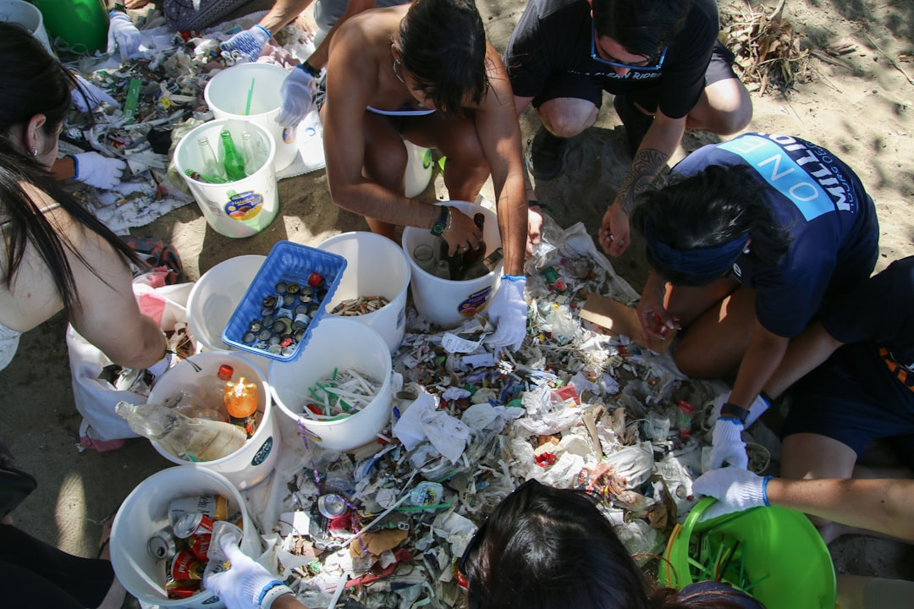

Réchauffement des eaux
La température des eaux caribéennes augmente chaque année, provoquant un blanchissement massif des coraux. En Guadeloupe, près de 50% des récifs coralliens sont menacés.
Notre histoire, nos valeurs, notre engagement pour les océans
MARËIS est née en 2018 de la volonté d'un groupe de Guadeloupéens passionnés, amoureux de la mer et préoccupés par la dégradation progressive de notre écosystème marin. Plongeurs, pêcheurs, biologistes et simples citoyens se sont unis autour d'une conviction commune : il était urgent d'agir pour préserver les richesses de nos eaux caribéennes.
Le nom "MARËIS" évoque à la fois la mer (mar) et les étoiles de mer (estrella), symboles de la beauté fragile de notre environnement marin. Depuis notre création, nous avons grandi pour devenir une communauté de plus de 150 bénévoles actifs, unis par le même engagement.
Aujourd'hui, MARËIS est reconnue comme un acteur majeur de la protection marine en Guadeloupe, intervenant aussi bien sur le terrain que dans les écoles pour sensibiliser les nouvelles générations.

La température des eaux caribéennes augmente chaque année, provoquant un blanchissement massif des coraux. En Guadeloupe, près de 50% des récifs coralliens sont menacés.
Chaque année, des tonnes de déchets plastiques envahissent nos côtes et nos fonds marins, menaçant la faune marine et détruisant les habitats naturels.
Les tortues marines, les lamantins et de nombreuses espèces de poissons voient leurs populations diminuer en raison des activités humaines et du changement climatique.
Nous croyons que toutes les espèces ont le droit d'exister. Nos actions visent à préserver la biodiversité marine sous toutes ses formes.
Nous sommes ancrés dans notre territoire guadeloupéen. Nous travaillons avec les communautés locales pour un impact durable.
L'éducation est au cœur de notre mission. Sensibiliser les jeunes générations, c'est assurer l'avenir de nos océans.
Au-delà des mots, nous agissons. Chaque nettoyage, chaque atelier, chaque sortie est un pas vers un océan plus sain.
Nous croyons en la force de l'action collective. Nos opérations de nettoyage des plages réunissent chaque année des centaines de bénévoles. Nous travaillons également avec les élus locaux pour promouvoir des politiques de protection du littoral.

Biologiste marine, passionnée par les tortues depuis 20 ans.

Ancien pêcheur, aujourd'hui défenseur des océans.
Enseignante et coordinatrice des actions en milieu scolaire.
Plongeur professionnel et organisateur des actions.
Ensemble, nous pouvons faire la différence. Devenez bénévole ou adhérent et participez activement à la protection de notre patrimoine marin.